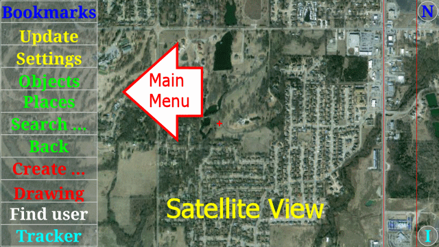
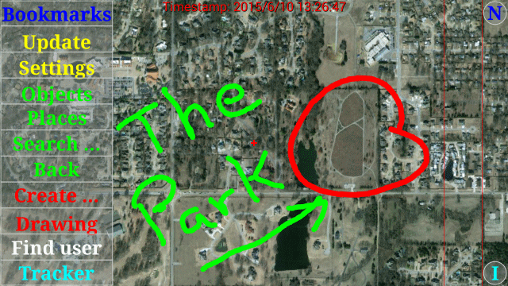
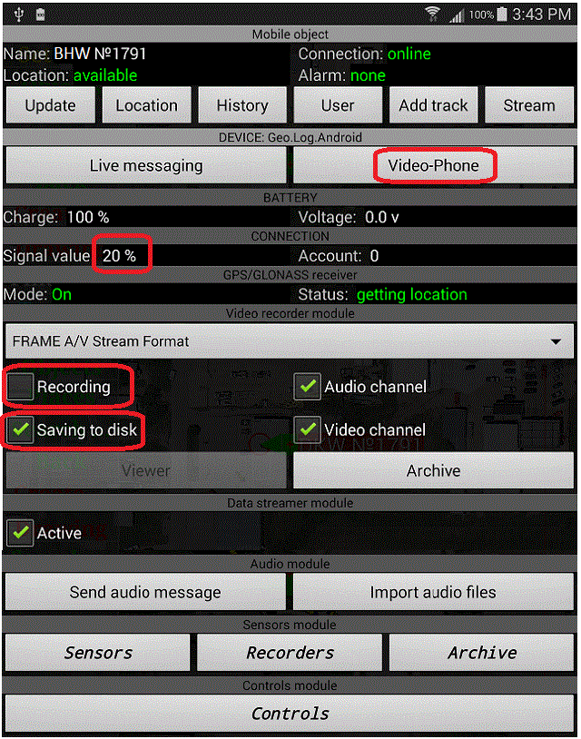

|
Geo.Log Program Help |
|
The main program window shows a map. The style of map (satellite or map view) will depend on how the User has configured the SETTINGS. These settings allow a User to combine various map resources, either raster or vectorized.  1. Right area – area of navigation. In the “default” navigation mode that area contains two Zones separated by two red vertical lines. The left zone will zoom the screen in and out using a vertical finger swipe. The right Zone is for rotating the image with a finger swipe. In an “arrow” navigation mode, the area contains buttons with arrows for the appropriate actions. 2. Left area – area of control buttons. A User can configure the SETTINGS to display the control button menu either as TEXT or SYMBOLS. The text is shown above and the symbols are shown below: “!” - update button. This button causes the Map window to be refreshed immediately. “=” - viewing configuration button opens a dialog screen with viewing settings. “*” - “my places” button opens a screen with the list of locations that have been bookmarked by the user. “O” - “my objects” button opens a screen with the list of Mobile Objects that have been bookmarked by the user. “?” - search button opens a screen that allows a User to search Map Objects by name. “<<” - “go back” button will allow a User to go back to the last visited location shown on the Map. “G” - Gallery button allows a User to select and CREATE a variety of data objects (audio, video, images) to display on the map. “+” - “editor” button opens a DRAWING tool and in-place map editor. A User can import images and do freehand drawing on the map surface. “U” - “user” button provides a feature to search for and FIND other Users that are active on the system. “@” - “tracker” button opens the TRACKER feature that enables a User to monitor device parameters such as current state, GPS position, speed and altitude. In addition, the screen contains several control elements (“Alarm button”, “POI button” etc) and implements the “Tap Command” feature and a Video Recording feature. “N” - “North” button aligns the Map screen to the North Pole.
Viewing configuration. To configure the map view click on the SETTINGS button. A settings screen appears.
“Navigation mode” - user can select a navigation model. “Map Sources and Layers” - a list of available maps and overlay layers . The «Load» button is to initiate the loading of selected map data from the remote Server. “Time: Now!” - go to current time for map viewing. “Time: Last” - enables a User to return to a previous map location the LAST TIME they were on the device.
|
|
Basic operations |
|
1. Creating a POI on the map (point of interest) . To create a POI click the TRACKER button. The following screen should appear.
For the Point-Of-Interest feature to work it is required that the GPS position receiver should be turned ON in the device system settings and that the current position is available (need at least 3 satellites). If you see that the location data is obsolete, it can be forced to update by pressing the “*” button. Next, press the «New POI» button, enter a POI name and press the “Create” button. As an optional next step, the user can attach any data files related to the POI such as Texts, Images, Video-clips, etc. The project supports Full HD video-clips with sizes up to 512 Mb. As a new POI is created it appears on the map as shown below:
By clicking on a POI image attachment a User will see a picture of the location.
2. User Drawing on the map. To draw something on the map a User should click the DRAWING menu button. A simple Graphics Editor appears:
Draw by using your finger or a stylus. Styles of the brush or its color may be selected from different screen buttons. As the drawing process is finished, press the “Commit” button. When the Commit screen appears enter a “drawing” name and check the appropriate options. The option to “Reset image after commit” is used to save the drawing image and then clear the screen. A link to the drawing with its time-stamp goes into the “My places” list accessed from the Main Map screen so that the User will be able to recall this drawing via the “Places” menu choice. This list also contains a feature to send these User drawings to another User(s) on the network. If the option “Reset image after commit” is unchecked, the program provides the user with a choice of drawing lifetimes – day, week, month. By selecting a lifetime, the User drawing will be cleared automatically after that time has expired but still accessible through the History and “My places” list.  3. Monitoring a mobile object. To monitor a mobile object the user should add an object entry into the “My Objects” list. That list appears by clicking the “OBJECTS” button on the Main Map screen.
The map below shows how a checked item on the “My Objects” list is displayed on the Main Map screen.
When a User clicks on an Object Marker, on the Main Map screen panel, an object's property panel appears. That panel shows parameters such as cellular signal value, GPS receiver status, etc. The panel also contains the ability to control elements of multimedia data, user Location, History and GPS Tracking. Using these elements a User can start an audio/video stream transmission from a remote Object (Set audio: ON, video: ON, and recording: ON. Start with the “Viewer” button). A User can also initiate an audio/video communication session to a remote User with the “Video-Phone” button.  * For additional details and tutorials on setup and configuration, please visit our website.
© 2015 geo-log.googlecode.com |